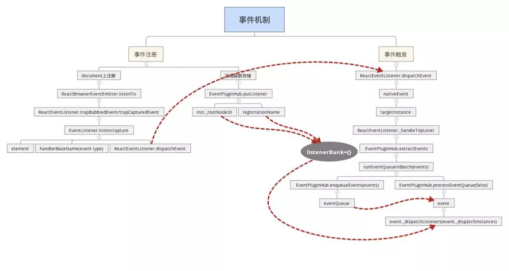

React事件机制
主要包含事件注册、触发以及回调函数的存储，最后会讲述一下Jquery事件机制与React事件机制的相同之处。 React事件机制不是原生的那一套，React组件上声明的事件没有绑定在React组件对应的原生DOM节点上，而是绑定在document节点上，触发的事件是对原生事件的包装。
React事件系统

React内部事件系统实现可以分为两个阶段：事件注册、事件触发，涉及的主要类如下：
- ReactEventListener：负责事件注册和事件分发。React将DOM事件全都注册到document节点上，事件分发主要调用dispatchEvent进行，从事件触发组件开始，向父元素遍历。
- ReactEventEmitter：负责每个组件上事件的执行。
- EventPluginHub：负责回调函数的存储
JSX中声明一个React事件，比如：
render() {
return (
<button onClick={this.handleClick}>点击</button>
)
}
用户点击button按钮触发click事件后，DOM将event传给ReactEventListener，它将事件分发到当前组件及以上的父组件。然后ReactEventEmitter对每个组件进行事件的执行，先构造React合成事件，然后以队列的方式调用JSX中声明的callback。 备注：以下代码逻辑大部分写在注释里面
1.事件注册
要从组件创建和更新的入口方法说起，ReactDOMComponent在进行组件加载时入口方法为mountComponent、更新时入口方法为updateComponent，这两个方法都会调用_updateDOMProperties方法，对JSX中声明的组件属性进行处理，源码如下：
ReactDOMComponent.Mixin = {
/**
* lastProp则表示上一次的属性
* nextProp表示要创建或者更新的属性
*/
_updateDOMProperties: function (lastProps, nextProps, transaction) {
...
// 如果是props这个对象直接声明的属性，不是从原型链中继承来的，则处理它
else if (registrationNameModules.hasOwnProperty(propKey)) {
// 对于mountComponent，lastProp为null。updateComponent二者都不为null。 unmountComponent则nextProp为null
if (nextProp) {
// mountComponent和updateComponent中，enqueuePutListener注册事件
enqueuePutListener(this, propKey, nextProp, transaction);
} else if (lastProp) {
// unmountComponent中，删除注册的listener，防止内存泄漏
deleteListener(this, propKey);
}
}
}
}
_updateDOMProperties中调用enqueuePutListener注册事件，下面来看enqueuePutListener，它负责两件事：在document上注册JSX中声明的事件；采用事务队列的方式存储注册事件，源码如下：
/**
* inst: React Component对象
* registrationName: React合成事件名，如onClick
* listener: React事件回调方法，如onClick=callback中的callback
* transaction: mountComponent或updateComponent所处的事务流，React都是基于事务流的
*/
function enqueuePutListener(inst, registrationName, listener, transaction) {
if (transaction instanceof ReactServerRenderingTransaction) {
return;
}
var containerInfo = inst._hostContainerInfo;
var isDocumentFragment = containerInfo._node && containerInfo._node.nodeType === DOC_FRAGMENT_TYPE;
// 找到document
var doc = isDocumentFragment ? containerInfo._node : containerInfo._ownerDocument;
// 注册事件，将事件注册到document上
listenTo(registrationName, doc);
// 存储事件,放入事务队列中
transaction.getReactMountReady().enqueue(putListener, {
inst: inst,
registrationName: registrationName,
listener: listener
});
}
上面调用listenTo方法来注册事件，接下来看listenTo方法 ，源码如下：
//ReactBrowserEventEmitter.js
listenTo: function (registrationName, contentDocumentHandle) {
...
if (...) {
//注册冒泡事件
ReactBrowserEventEmitter.ReactEventListener.trapBubbledEvent(...);
} else if (...) {
//注册捕获事件
ReactBrowserEventEmitter.ReactEventListener.trapCapturedEvent(...);
}
...
}
listenTo解决了不同浏览器间捕获和冒泡不兼容的问题，事件回调方法在冒泡阶段被触发，如果我们想让它在捕获阶段触发，需要在事件名加上capture，比如冒泡阶段触发，点击事件写成onClick，在捕获阶段触发需要写成onCaptureClick。 接下来主要看trapBubbledEvent方法，源码如下：
//ReactEventListener.js
var ReactEventListener = {
...
trapBubbledEvent: function (topLevelType, handlerBaseName, element) {
...
return EventListener.listen(
element, //绑定到的DOM节点，即document
handlerBaseName, //事件类型
ReactEventListener.dispatchEvent.bind(null, topLevelType) //callback，document上的原生事件触发后的回调函数，不包含任何的事物处理，只起到事件分发的作用
);
},
trapCapturedEvent: function (topLevelType, handlerBaseName, element) {
var handler = ReactEventListener.dispatchEvent.bind(null, topLevelType);
return EventListener.capture(element, handlerBaseName, handler);
}
//在listen方法中，终于发现了熟悉的addEventListener这个原生事件注册方法
listen: function listen(target, eventType, callback) {
if (target.addEventListener) {
// 将原生事件添加到target这个dom上,也就是document上。
// 这就是只有document这个DOM节点上有原生事件的原因
target.addEventListener(eventType, callback, false);
return {
// 删除事件,这个由React自己回调,不需要调用者来销毁。但仅仅对于React合成事件才行
remove: function remove() {
target.removeEventListener(eventType, callback, false);
}
};
} else if (target.attachEvent) {
// attach和detach的方式
target.attachEvent('on' + eventType, callback);
return {
remove: function remove() {
target.detachEvent('on' + eventType, callback);
}
};
}
},
//事件分发，document不管注册的是什么事件，都执行统一的回调函数 handleTopLevelImpl
dispatchEvent: function (topLevelType, nativeEvent) {
...
ReactUpdates.batchedUpdates(handleTopLevelImpl, bookKeeping);
...
}
}
function handleTopLevelImpl(bookKeeping) {
...
ReactEventListener._handleTopLevel(bookKeeping.topLevelType, targetInst, bookKeeping.nativeEvent, getEventTarget(bookKeeping.nativeEvent));
...
}
事件注册说完了， 接下来说事件存储
2、事件存储
事件存储由EventPluginHub负责，它的入口在上面讲到的enqueuePutListener中的putListener方法，源码如下：
/**
* EventPluginHub用来存储React事件, 将listener存储到`listenerBank[registrationName][key]`
*
* @param {object} inst: 事件源
* @param {string} 事件属性，比如onClick
* @param {function} callback
*/
//
putListener: function (inst, registrationName, listener) {
// 用来标识注册了事件,比如onClick的React对象。key的格式为'.nodeId', 只用知道它可以标示哪个React对象就可以了
var key = getDictionaryKey(inst);
var bankForRegistrationName = listenerBank[registrationName] || (listenerBank[registrationName] = {});
// 将listener事件回调方法存入listenerBank[registrationName][key]中,比如listenerBank['onclick'][nodeId]
// 所有React组件对象定义的所有React事件都会存储在listenerBank中
bankForRegistrationName[key] = listener;
},
var getDictionaryKey = function (inst) {
return '.' + inst._rootNodeID;
};
React中的所有事件的回调函数均存储在listenerBank对象里，根据事件类型、component对象的_rootNodeID为两个key，来存储对应的回调函数。比如nodeId组件上注册的onClick事件最后存储在listenerBank.onclick[nodeId]中。
事件注册完后，就可以依据事件委托进行事件执行，接下来说事件执行。
3、事件执行
注册事件中已经提到，几乎所有的事件都注册在document上，document上的事件回调函数只有一个： ReactEventListener.dispatchEvent，进行相关的分发。
3.1 事件分发
源码如下
var ReactEventListener = {
// topLevelType：事件名
// nativeEvent: 用户触发click等事件时，浏览器传递的原生事件
dispatchEvent: function (topLevelType, nativeEvent) {
...
// 放入批处理队列中,React事件流也是一个消息队列的方式
ReactUpdates.batchedUpdates(handleTopLevelImpl, bookKeeping);
...
}
}
//handleTopLevelImpl才是事件分发的真正执行者，它是事件分发的核心，体现了React事件分发的特点
function handleTopLevelImpl(bookKeeping) {
//根据原生的事件对象，找到事件触发的dom元素以及该dom对应的component对象
var nativeEventTarget = getEventTarget(bookKeeping.nativeEvent);
var targetInst = ReactDOMComponentTree.getClosestInstanceFromNode(nativeEventTarget);
// 执行事件回调前,先由当前组件向上遍历它的所有父组件。得到ancestors这个数组。
// 因为事件回调中可能会改变Virtual DOM结构,所以要先遍历好组件层级
var ancestor = targetInst;
do {
bookKeeping.ancestors.push(ancestor);
ancestor = ancestor && findParent(ancestor);
} while (ancestor);
// 从当前组件向父组件遍历,依次执行注册的回调方法. 我们遍历构造ancestors数组时,是从当前组件向父组件回溯的,故此处事件回调也是这个顺序
// 这个顺序就是冒泡的顺序,并且我们发现不能通过stopPropagation来阻止'冒泡'。
for (var i = 0; i < bookKeeping.ancestors.length; i++) {
targetInst = bookKeeping.ancestors[i];
// _handleTopLevel是初始化时用ReactEventEmitterMixin注入进来的
ReactEventListener._handleTopLevel(bookKeeping.topLevelType, targetInst, bookKeeping.nativeEvent, getEventTarget(bookKeeping.nativeEvent));
}
}
// ReactEventEmitterMixin.js
// ReactEventEmitterMixin一方面生成合成的事件对象，另一方面批量执行定义的回调函数
var ReactEventEmitterMixin = {
// handleTopLevel方法是事件回调函数调用的核心。DOM事件绑定在了document原生对象上,每次事件触发,都会调用到handleTopLevel
handleTopLevel: function (...) {
// 利用浏览器回传的原生事件构造出React合成事件。不同的eventType的合成事件可能不同
var events = EventPluginHub.extractEvents(...);
//采用队列的方式处理回调函数
runEventQueueInBatch(events);
}
}
//进行批量更新
function runEventQueueInBatch(events) {
EventPluginHub.enqueueEvents(events);
EventPluginHub.processEventQueue(false);
}
从上面的事件分发中可见，React自身实现了一套冒泡机制。从触发事件的对象开始，向父元素回溯，依次调用它们注册的事件callback。
上面的代码提到批量处理回调函数时要把事件传进去，react中的事件对象不是原生的事件对象，而是经过处理后的对象，接下来看一下如何生成合成事件。
3.2生成合成事件
生成合成事件，源码如下：
// EventPluginHub.js
var EventPluginHub = {
extractEvents: function (...) {
var events;
// EventPluginHub可以存储React合成事件的callback,也存储了一些plugin,这些plugin在EventPluginHub初始化时注册的
var plugins = EventPluginRegistry.plugins;
for (var i = 0; i < plugins.length; i++) {
var possiblePlugin = plugins[i];
if (possiblePlugin) {
// 根据eventType构造不同的合成事件SyntheticEvent
var extractedEvents = possiblePlugin.extractEvents(topLevelType, targetInst, nativeEvent, nativeEventTarget);
if (extractedEvents) {
// 将构造好的合成事件extractedEvents添加到events数组中,这样就保存了所有plugin构造的合成事件
events = accumulateInto(events, extractedEvents);
}
}
}
return events;
}
}
上面提到系统启动过程中注入(injection)过来plugins，代码如下：
// react-dom模块的入口文件ReactDOM.js:
var ReactDefaultInjection = require('./ReactDefaultInjection');
ReactDefaultInjection.inject();
...
// ReactDefaultInjection.js
module.exports = {
inject: inject
};
function inject() {
...
ReactInjection.EventPluginHub.injectEventPluginsByName({
SimpleEventPlugin: SimpleEventPlugin,
EnterLeaveEventPlugin: EnterLeaveEventPlugin,
ChangeEventPlugin: ChangeEventPlugin,
SelectEventPlugin: SelectEventPlugin,
BeforeInputEventPlugin: BeforeInputEventPlugin
});
...
}
默认情况下，react注入了五种事件plugin，针对不同的事件，得到不同的合成事件，下面看一下最常见的 SimpleEventPlugin 如何生成它对应的React合成事件，代码如下：
// 根据不同事件类型,比如click,focus构造不同的合成事件SyntheticEvent, 如SyntheticKeyboardEvent SyntheticFocusEvent
extractEvents: function (topLevelType, targetInst, nativeEvent, nativeEventTarget) {
var dispatchConfig = topLevelEventsToDispatchConfig[topLevelType];
if (!dispatchConfig) {
return null;
}
var EventConstructor;
// 根据事件类型，采用不同的SyntheticEvent来构造不同的合成事件
switch (topLevelType) {
... // 仅以blur和focus为例
case 'topBlur':
case 'topFocus':
EventConstructor = SyntheticFocusEvent;
break;
...
}
// 从event对象池中取出合成事件对象
var event = EventConstructor.getPooled(dispatchConfig, targetInst, nativeEvent, nativeEventTarget);
//用于从EventPluginHub中获取回调函数
EventPropagators.accumulateTwoPhaseDispatches(event);
return event;
},
上面提到调用EventPropagators.accumulateTwoPhaseDispatches(event)从EventPluginHub中获取回调函数，如何获取具体的回调函数，如下：
// EventPropagators.js
function accumulateTwoPhaseDispatches(events) {
forEachAccumulated(events, accumulateTwoPhaseDispatchesSingle);
}
function accumulateTwoPhaseDispatchesSingle(event) {
if (event && event.dispatchConfig.phasedRegistrationNames) {
EventPluginUtils.traverseTwoPhase(event._targetInst, accumulateDirectionalDispatches, event);
}
}
function accumulateDirectionalDispatches(inst, phase, event) {
var listener = listenerAtPhase(inst, event, phase);
if (listener) {
event._dispatchListeners = accumulateInto(event._dispatchListeners, listener);
event._dispatchInstances = accumulateInto(event._dispatchInstances, inst);
}
}
var getListener = EventPluginHub.getListener;
function listenerAtPhase(inst, event, propagationPhase) {
var registrationName = event.dispatchConfig.phasedRegistrationNames[propagationPhase];
return getListener(inst, registrationName);
}
// EventPluginHub.js
getListener: function (inst, registrationName) {
var bankForRegistrationName = listenerBank[registrationName];
var key = getDictionaryKey(inst);
return bankForRegistrationName && bankForRegistrationName[key];
},
3.3批量处理回调函数
回调函数拿到了，继续3.1中的采用队列的方式处理回调函数，react会进行批量处理具体的回调函数，回调函数的执行为两步，源码如下：
function runEventQueueInBatch(events) {
// 第一步：将events事件放入队列中
EventPluginHub.enqueueEvents(events);
// 第二部：处理队列中的事件,包括之前未处理完的。先入先处理原则
EventPluginHub.processEventQueue(false);
}
第一步源码如下：
var eventQueue = null;
var EventPluginHub = {
enqueueEvents: function (events) {
if (events) {
eventQueue = accumulateInto(eventQueue, events);
}
},
processEventQueue: function (simulated) {
var processingEventQueue = eventQueue;
...
forEachAccumulated(processingEventQueue, executeDispatchesAndReleaseSimulated);
...
},
}
function accumulateInto(current, next) {
if (current == null) {
return next;
}
// 将next添加到current中,返回一个包含他们两个的新数组
// 如果next是数组,current不是数组,采用push方法,否则采用concat方法
// 如果next不是数组,则返回一个current和next构成的新数组
if (Array.isArray(current)) {
if (Array.isArray(next)) {
current.push.apply(current, next);
return current;
}
current.push(next);
return current;
}
if (Array.isArray(next)) {
return [current].concat(next);
}
return [current, next];
}
第二步事件执行的入口方法为executeDispatchesAndReleaseTopLevel，代码如下：
var executeDispatchesAndReleaseTopLevel = function (e) {
return executeDispatchesAndRelease(e, false);
};
var executeDispatchesAndRelease = function (event, simulated) {
if (event) {
//进行事件分发
EventPluginUtils.executeDispatchesInOrder(event, simulated);
if (!event.isPersistent()) {
// 处理完,则release掉event对象,采用对象池方式,减少GC
// React帮我们处理了合成事件的回收机制，不需要我们关心。但要注意，如果使用了DOM原生事件，则要自己回收
event.constructor.release(event);
}
}
};
// EventPluginUtils.js
// 事件处理的核心
function executeDispatchesInOrder(event, simulated) {
var dispatchListeners = event._dispatchListeners;
var dispatchInstances = event._dispatchInstances;
if (Array.isArray(dispatchListeners)) {
// 如果有多个listener,则遍历执行数组中event
for (var i = 0; i < dispatchListeners.length; i++) {
// 如果isPropagationStopped设成true了,则停止事件传播,退出循环。
if (event.isPropagationStopped()) {
break;
}
// 执行event的分发,从当前触发事件元素向父元素遍历
// event为浏览器上传的原生事件
// dispatchListeners[i]为JSX中声明的事件callback
// dispatchInstances[i]为对应的React Component
executeDispatch(event, simulated, dispatchListeners[i], dispatchInstances[i]);
}
} else if (dispatchListeners) {
// 如果只有一个listener,则直接执行事件分发
executeDispatch(event, simulated, dispatchListeners, dispatchInstances);
}
// 处理完event,重置变量。因为使用的对象池,故必须重置,这样才能被别人复用
event._dispatchListeners = null;
event._dispatchInstances = null;
}
Jquery事件机制
Jquery事件机制中也会调用原生的注册事件和删除事件，回调函数存储跟React的回调函数存储类似，可以阅读代码，感受一下事件机制的相通之处，源码如下：
jQuery.fn.extend( {
on: function (types, selector, data, fn) {
// on 又依托于全局的 on 函数
return on(this, types, selector, data, fn);
}
} );
//on函数
function on( elem, types, selector, data, fn, one ) {
var origFn, type;
// 支持 object 的情况
if ( typeof types === "object" ) {
// ( types-Object, selector, data )
if ( typeof selector !== "string" ) {
// ( types-Object, data )
data = data || selector;
selector = undefined;
}
// 一次执行 object 的每一个
for ( type in types ) {
on( elem, type, selector, data, types[ type ], one );
}
return elem;
}
// 参数为两个的情况
if ( data == null && fn == null ) {
// ( types, fn )
fn = selector;
data = selector = undefined;
} else if ( fn == null ) {
if ( typeof selector === "string" ) {
// ( types, selector, fn )
fn = data;
data = undefined;
} else {
// ( types, data, fn )
fn = data;
data = selector;
selector = undefined;
}
}
if ( fn === false ) {
// returnFalse 是一个返回 false 的函数
fn = returnFalse;
} else if ( !fn ) {
return elem;
}
if ( one === 1 ) {
origFn = fn;
fn = function( event ) {
// Can use an empty set, since event contains the info
jQuery().off( event );
return origFn.apply( this, arguments );
};
// Use same guid so caller can remove using origFn
fn.guid = origFn.guid || ( origFn.guid = jQuery.guid++ );
}
return elem.each( function() {
// 关键
jQuery.event.add( this, types, fn, data, selector );
} );
}
//off函数
jQuery.fn.off = function (types, selector, fn) {
var handleObj, type;
if (types && types.preventDefault && types.handleObj) {
// ( event ) dispatched jQuery.Event
handleObj = types.handleObj;
jQuery(types.delegateTarget).off(
handleObj.namespace ? handleObj.origType + "." + handleObj.namespace : handleObj.origType,
handleObj.selector,
handleObj.handler
);
return this;
}
if (typeof types === "object") {
// ( types-object [, selector] )
for (type in types) {
this.off(type, selector, types[type]);
}
return this;
}
if (selector === false || typeof selector === "function") {
// ( types [, fn] )
fn = selector;
selector = undefined;
}
if (fn === false) {
fn = returnFalse;
}
return this.each(function() {
// 关键
jQuery.event.remove(this, types, fn, selector);
});
}